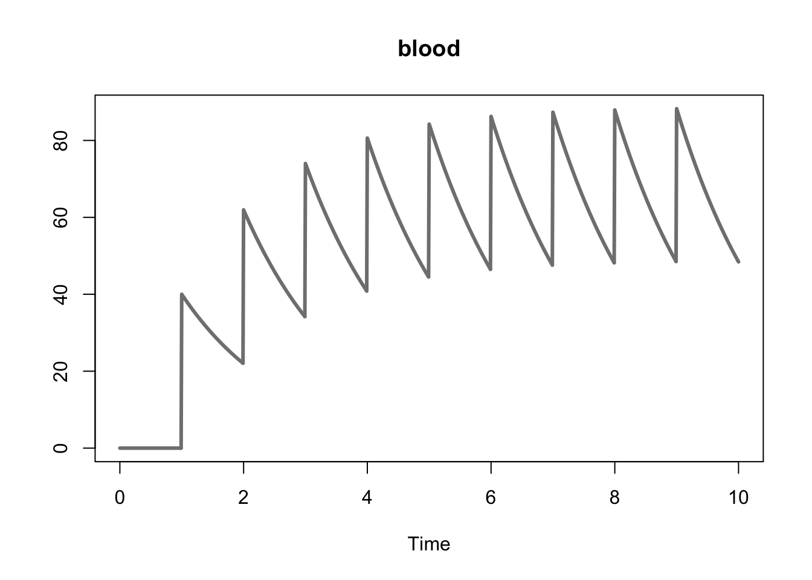
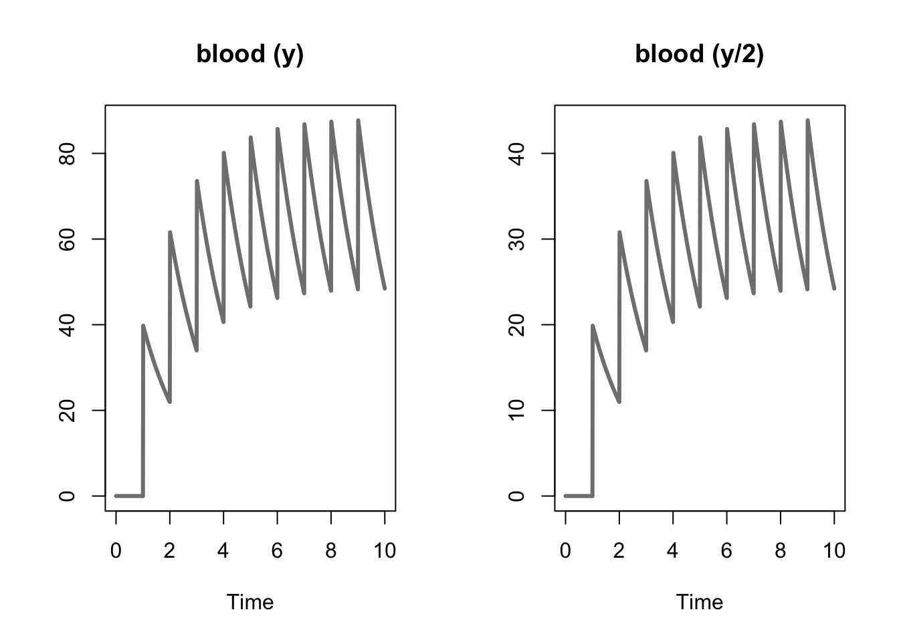

4 Dosing
Dosing can be handled either in the Model Events block or by providing a data frame that describes a dosing table that can be called into the simulate function as the argument dosingTable. Both approaches are discussed below using, as an example, the following model of a simple one compartment model.
\[ \frac{d}{dt}y = -\theta \cdot y \]
4.1 Dosing in the Model Events Block
The model below defines dosing within the Model Events block for a simple one compartment model.
********** MODEL NAME
Simple One Compartment Dosing Model
********** MODEL NOTES
A simple one compartment dosing model where
ten equally spaced doses are given to the subject.
********** MODEL STATES
d/dt(y) = -theta * y
y(0) = 0
********** MODEL PARAMETERS
theta = 0.6
********** MODEL VARIABLES
********** MODEL REACTIONS
********** MODEL FUNCTIONS
********** MODEL EVENTS
% adding 40 units at a specified time step
event1 = eq(time, 1), y, y+40
event2 = eq(time, 2), y, y+40
event3 = eq(time, 3), y, y+40
event4 = eq(time, 4), y, y+40
event5 = eq(time, 5), y, y+40
event6 = eq(time, 6), y, y+40
event7 = eq(time, 7), y, y+40
event8 = eq(time, 8), y, y+40
event9 = eq(time, 9), y, y+40Below we compile the model, simulate, and plot the variable.
one_cpt <- create_model(system.file("examples/one_cpt.txt", package="AZRsim"))## Warning in check_azrmod(model): check_azrmod: AZRmodel contains state names
## with a single character name. Try to avoid that if you plan to use NONMEM
## or MONOLIXone_cpt_simulation <- simulate(one_cpt, simtime = 10)
plot(one_cpt_simulation, col = "#808080", lwd = 3, plot_names = "blood")
4.2 Dosing with a Dosing Table
The model below defines an analogous dosing regimen using the INPUT* variable in the system of differential equations for the same model. Note that INPUT* must be applied to the relevant variables in the Model States block. In this context a dose (the units of which will be defined in the dosing table) is added to the variable y at specific time intervals (also defined in the dosing table).
********** MODEL NAME
Simple One Compartment Dosing Model
********** MODEL NOTES
A simple one compartment dosing model where
the doses must be defined as a data frame in
the 'dosingTable' argument of the simulate
function.
********** MODEL STATES
d/dt(y) = -theta * y + INPUT1
y(0) = 0
********** MODEL PARAMETERS
theta = 0.6
********** MODEL VARIABLES
********** MODEL REACTIONS
********** MODEL FUNCTIONS
********** MODEL EVENTSBelow we construct a dosing table, compile the model, simulate, and plot the variable. The dosing table must be a data frame with the following columns,
TIME- the time at which the does occurs.DOSE- the units of the dose.DURATION- how long the dose is administered.INPUT- which input variable the dose is associated with.LAGTIME- the lag time associated with each dose.
one_cpt_dt <- create_model(system.file("examples/one_cpt_dt.txt", package="AZRsim"))## Warning in check_azrmod(model): check_azrmod: AZRmodel contains state names
## with a single character name. Try to avoid that if you plan to use NONMEM
## or MONOLIXdt <- data.frame("TIME" = seq(1,9, by = 1),
"DOSE" = 40,
"DURATION" = 0,
"INPUT" = 1,
"LAGTIME" = 0,
stringsAsFactors = FALSE)
one_cpt_dt_simulation <- simulate(one_cpt_dt, 10, dosingTable = dt)
plot(one_cpt_dt_simulation, col = "#808080", lwd = 3, pars = "y", plot_names = "blood")4.3 Outputs
It is also possible to defined outputs from using OUTPUT* in the model. An example is provided below where the output is half of the state variable.
********** MODEL NAME
Simple One Compartment Dosing Model
********** MODEL NOTES
A simple one compartment dosing model where
the doses must be defined as a data frame in
the 'dosingTable' argument of the simulate
function.
********** MODEL STATES
d/dt(y) = -theta * y + INPUT1
y(0) = 0
********** MODEL PARAMETERS
theta = 0.6
********** MODEL VARIABLES
y_new = y/2
OUTPUT1 = y_new
********** MODEL REACTIONS
********** MODEL FUNCTIONS
********** MODEL EVENTSBelow we compile the model, simulate the state variables, and plot the results.
one_cpt_out <- create_model(system.file("examples/one_cpt_output.txt", package="AZRsim"))## Warning in check_azrmod(model): check_azrmod: AZRmodel contains state names
## with a single character name. Try to avoid that if you plan to use NONMEM
## or MONOLIXdt <- data.frame("TIME" = seq(1,9, by = 1),
"DOSE" = 40,
"DURATION" = 0,
"INPUT" = 1,
"LAGTIME" = 0,
stringsAsFactors = FALSE)
one_cpt_out_simulation <- simulate(one_cpt_out, 10, dosingTable = dt, output = c("y", "OUTPUT1"))
plot(one_cpt_out_simulation, col = "#808080", lwd = 3, plot_names = c("blood (y)", "blood (y/2)"))